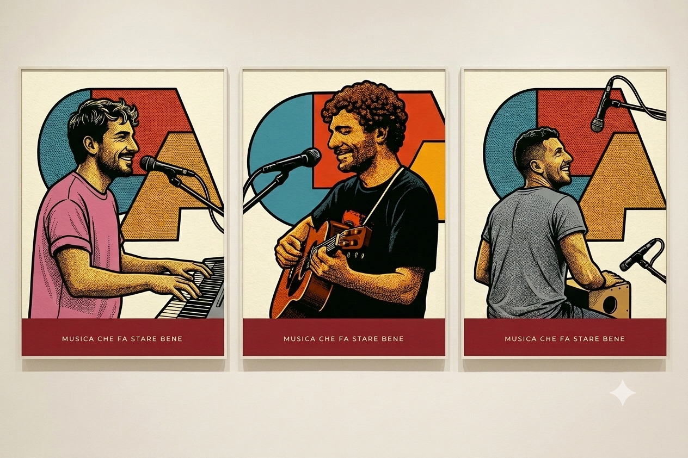

Trio acustico
Trequila
Musica che fa stare bene
Voce, chitarra e groove — brani nostri improvvisati sul momento e classici rivisitati, dal vivo, senza rete.
Guarda la prossima data
Chi siamo
Siamo un trio acustico: pianoforte, chitarra e percussioni, in un equilibrio che cambia a ogni serata. Suoniamo brani non nostri, ma li portiamo dove vogliamo noi — a volte li improvvisiamo da zero, davanti al pubblico, senza rete.
Niente studio, niente dischi: la musica di Trequila esiste solo dal vivo, nel momento in cui viene suonata.